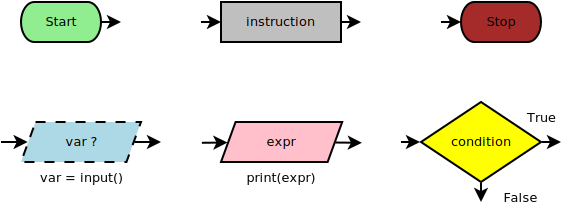
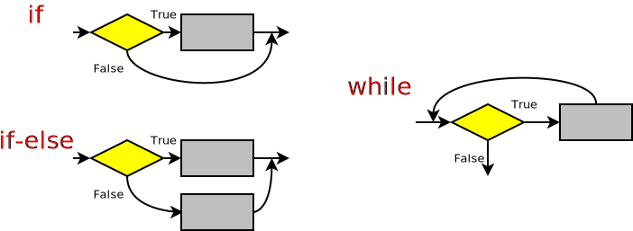
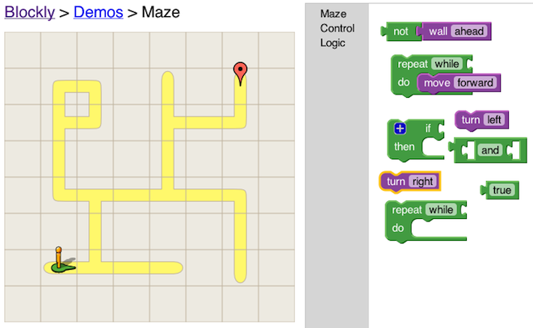

- Rappresentazione dei dati
- Numeri
- Testi, immagini e suoni
- Teoria della computazione
- Linguaggi formali
- Automi e calcolatori
- Complessità computazionale
- Sviluppo del software
- Ciclo di vita; qualità e collaudo
Fondamenti di informatica + Lab
Michele Tomaiuolo
Ingegneria dell'Informazione, UniPR
1. Introduzione all'informatica
2. Introduzione alla programmazione
- Algoritmi in Python 3
- Funzioni e oggetti
- Liste e composizione
- Ricorsione, file e matrici
- Linguaggio C++11
3. Esercitazioni in laboratorio
- Esercizi di base, in Python
- A riga di comando e con grafica
- Piccoli progetti a oggetti
- Prima in Python e poi in C++
- Attenzione: non sono sufficienti le poche ore in laboratorio per imparare a programmare!
- “Venite già studiati”
- Completate tutti gli esercizi, a casa
- Assiduità!
If you wish to learn swimming you have to go into the water and if you wish to become a problem solver you have to solve problems. (George Polya)
Istruzioni per i laboratori
- Verificare in anticipo il proprio account per l'accesso ai lab
- Esercitazioni ogni lunedì pomeriggio, a scelta su 2 turni
- 13:30-15:30 primo turno, 15:30-17:30 secondo turno
- Possibile sviluppare da soli o in coppia
- Ma tassativamente non più di due!
- Verifica esercitazioni
- Alla fine di ogni esercitazione, consegna dei programmi in una cartella denominata con la propria matricola
- Periodicamente, lavori consegnati sottoposti a valutazioni intermedie, non preannunciate
Istruzioni per i laboratori
- Verificare in anticipo il proprio account per l'accesso ai lab
- Esercitazioni ogni lunedì pomeriggio, su 2 turni distinti
- 13:30-15:30 matricole terminanti con 3-4-5-6-7-8-9
- 15:30-17:30 matricole terminanti con 0-1-2
- Possibile sviluppare da soli o in coppia
- Ma tassativamente non più di due!
- Se si sviluppa in coppia, turno determinato dalla matricola minore
- Verifica esercitazioni
- Alla fine di ogni esercitazione, consegna dei programmi in una cartella denominata con la propria matricola
- Periodicamente, lavori consegnati sottoposti a valutazioni intermedie, non preannunciate
Tutor e assistenza
- Materiale di studio
- Libri di testo e slide del corso
- Esercizi risolti degli anni precedenti
- http://tomamic.github.io/fondinfo/
- Durante le esercitazioni, assistenza di vari tutor
- A lezione
- Esempi prima delle esercitazioni
- Soluzioni di esercizi delle settimane precedenti
- Ogni mercoledì, ricevimento aperto a tutti, 12:30-14:30
- Palazzina A della sede scientifica (~ biblioteca)
Modalità d'esame
- (1) Prova sull'Introduzione all'informatica (quiz)
- A fine corso, oppure...
- Appelli usuali
- (2) Prova sull'Introduzione alla programmazione (lab)
- Svolgimento esercitazioni in laboratorio, oppure…
- Prova in appelli usuali (~3 ore)
- Le due prove si possono svolgere in tempi diversi e ciascuna resta valida per l'intero anno (fino ad ottobre)
- Il voto finale è determinato:
- per 1/4 dalla teoria
- per 3/4 dalla programmazione
Testi di riferimento

- Fondamenti di informatica e lab. McGraw-Hill 2014. ISBN 978-13-082-4813-4 (~25€, 250pp., nelle librerie universitarie )
- A.B. Downey: Think Python 2e - https://github.com/AllenDowney/ThinkPythonItalian
- A.B. Downey: How to Think Like a Computer Scientist C++ Version - http://greenteapress.com/thinkcpp/
- M. Beri: Python, Apogeo Pocket 2010, 978-8850329151 (~8€)
Altri testi e video
- C.S. Horstmann: Fondamenti di C++, McGraw-Hill 2003, 978-8838661051 (~43€, 768pp.)
- S.B. Lippman, J. Lajoie, B.E. Moo: C++ Primer 5e, Addison Wesley 2012, 978-0321714114 (~36€, 940pp.)
- M. Dawson: Python Programming for the Absolute Beginner 3e, Course Tech. 2010, 978-1435455009 (~25€, 450pp.)
- M. Dawson: Beginning C++ Through Game Programming 4e, Course Tech. 2014, 978-1305109919 (~28€, 390pp.)
- MIT: Intro to CS and Programming in Python - Video delle lezioni
- Documentazione
Strumenti software

- Strumenti open source, multi-piattaforma
- Python.org, v3.7, battery included
- Playground Python
- CodeBlocks.org, C++ IDE, con MinGW e setup
- Installare Ubuntu in una VirtualBox
## Ubuntu, Debian etc.
sudo apt install idle3 python3-pip codeblocks build-essential
pip3 install pygame cppyy
Problem solving

- “How to solve it”
- George Polya, 1945
- Soluzione di problemi matematici: processo raramente lineare
- (1) See. Capire il problema
- Quali dati? Quali incognite?
- Quali condizioni? Soddisfacibili, ridondanti, contraddittorie?
- Figure, notazione
Make things as simple as possible, but not simpler. (A. Einstein)
For every complex problem there is an answer that is clear, simple, and wrong. (H.L. Mencken)
Dal problema alla soluzione, e ritorno
- (2) Plan. Elaborare un piano
- Mettere in relazione dati e incognite
- Riduzione, analogia, divide et impera, composizione, astrazione... Pensiero computazionale
- Cominciare a risolvere un problema più semplice (vincoli rilassati)
- (3) Do. Implementare il piano
- Realizzare il sistema da sperimentare
- (4) Check. Controllare la soluzione
- Corretta? Ottenibile in altro modo?
- Risultato, o metodo, utilizzabile per altri problemi?
If you can't solve a problem...
then there is an easier problem you can solve: find it. (G. Polya)
Elementi di un algoritmo

- Algoritmo: procedimento che risolve un determinato problema attraverso un numero finito di passi elementari (al-Khwarizmi, ~800)
- Dati: iniziali (istanza problema), intermedi, finali (soluzione)
- Passi elementari: azioni atomiche non scomponibili in azioni più semplici
- Processo, o anche esecuzione: sequenza ordinata di passi
- Proprietà: finitezza, non ambiguità, realizzabilità, efficienza...
Computer science is no more about computers than astronomy is about telescopes. (E. Dijkstra...)
Ricerca in uno schedario ü§î
- Es. in biblioteca: cercare la scheda di un certo libro
- (1) Finchè restano delle schede da esaminare: si prende la prima scheda non ancora controllata
- (2) Se autore e titolo sono quelli cercati: scheda trovata, ricerca conclusa!
- (3) (Altrimenti...)
Si ripete il controllo (1), passando alla scheda successiva - (4) Esaurite le schede, il libro non è nella biblioteca!
Cercare più velocemente ü§î
- Su schedario ordinato si può fare più in fretta
- (1) Finchè restano delle schede da esaminare: si prende tra loro la scheda centrale
- (2) Se autore e titolo sono quelli cercati: scheda trovata, ricerca conclusa!
- (3) Altrimenti, se autore e titolo vengono dopo quelli cercati: si scartano subito tutte le schede successive
- (4) Altrimenti, infine: si scartano le schede precedenti
- (5) Si ripete la ricerca sull'insieme dimezzato (1)
- (6) Esaurite le schede, il libro non è nella biblioteca!
Complessit√† e calcolabilit√† ü§î
- Complessità: classificare algoritmi (e problemi)
- Trattabili: costo accettabile, “polinomiale”
- Non trattabili: costo “esponenziale”
- Calcolabilità: distinguere i problemi non risolvibili
- Es. Valore di verità di
P: Questa frase è falsa - Incompletezza Gödel; indecidibilità terminazione
- ∀ formalizzazione della matematica che assiomatizza ℕ
→ ∃ proposizione né dimostrabile né confutabile
- Es. Valore di verità di
Diagramma di flusso

- Flow-chart: Rappresentazione grafica di algoritmi
- Più efficace e meno ambigua di una descrizione a parole
- Due tipi di entità:
- Nodi
- Archi
- È un grafo orientato
- Passi di un algoritmo e loro sequenza
Tipi di nodi

- Istruzioni di I/O: es. leggere dati da tastiera o mostrarli a schermo
- Operazioni aritmetico-logiche
- Controllo del flusso di esecuzione
Programmazione strutturata

- Strutture di controllo:
- Sequenza
- Selezione
- Iterazione
Qualunque algoritmo può essere implementato utilizzando queste tre sole strutture (Teorema di Böhm-Jacopini, 1966)
Goto statement considered harmful (Dijkstra, 1968)
Strutture di controllo

- Esempi quotidiani di
ifewhile:- “Se non c'è il lievito, usare due cucchiaini di bicarbonato”
- “Battere gli albumi finché non montano”
Blockly

Esempi di progetti
Super Mario

- Mario: guidato dal giocatore
- Si muove e salta sulle piattaforme
- Cade secondo gravità, fuori dalle piattaforme
- Ma non accelera oltre una velocità limite
- Muore se cade in fondo allo schermo
- Muri e piattaforme
- Mario ci atterra dall'alto
- Non si possono attraversare in nessuna direzione
- Avversari
- Si muovono sulle piattaforme come Mario, ma scelgono casualmente la direzione
- Uccidono Mario se lo urtano, ma muoiono se Mario ci salta sopra
Pac-Man

- Pac-Man
- Guidato dal giocatore, con la tastiera
- Applica i comandi solo solo agli incroci
- Fantasmi
- Uccidono Pac-Man se lo toccano
- Agli incroci svoltano casualmente
- Ma non tornano mai indietro!
- Biscotti
- Pac-Man deve mangiarli tutti, per terminare il gioco
- SuperBiscotti
- Danno per breve tempo a Pac-Man il potere di mangiare i fantasmi
Slitherlink

- Regole
- Connect adjacent dots with vertical or horizontal lines to make a single loop
- The numbers indicate how many lines surround it, while empty cells may be surrounded by any number of lines
- The loop never crosses itself and never branches off
Bubble Bobble
- Draghetto: guidato dal giocatore
- Si muove e salta sulle piattaforme
- Muore se cade in fondo allo schermo
- Avversari
- Saltano come il draghetto sulle piattaforme
- Ma scelgono casualmente la direzione
- Uccidono il draghetto se lo urtano
- Bolle
- Lanciate in orizzontale dal draghetto
- Dopo un po' deviano verso l'alto
- Catturano gli avversari che urtano
Hitori

- Regole
- Color cells so no number appears more than once in a row or column
- The sides of black cells never touch
- White cells form a continuous network
- Ad ogni mossa, permettere all'utente di annerire un numero, oppure cerchiarlo
- Controllare la violazione delle regole
- Controllare il completamento del gioco (ogni numero: correttamente annerito o cerchiato)
Snake
- Serpente: guidato dal giocatore
- Avanza continuamente
- Non può tornare indietro
- Se tocca se stesso, muore
- Cibo: disposto casualmente
- Il serpente si allunga dopo aver mangiato
- Muri: in posizione fissa
- Il serpente muore se ci va a sbattere
Campo minato

- N mine nascoste a caso in tabella rettangolare
- Ad ogni turno, l'utente scopre una casella:
- Mina → partita persa
- Solo N caselle coperte (con mine) → partita vinta
- Altrimenti, conteggio mine nelle 8 caselle adiacenti
Akari - Light up

- Scopo: illuminare tutte le celle bianche
- Una lampada illumina tutte le celle visibili sulla sua riga e la sua colonna
- Due lampade non possono illuminarsi a vicenda
- Vincolo numerico: # lampade nelle 4 celle adiacenti
Othello

- In due, bianco e nero
- All'inizio: 2 coppie di pedine al centro, incrociate
- A turno, ciascun giocatore aggiunge una pedina
- È obbligatorio catturare, se non ci sono mosse si passa il turno
- Se viene circondata una fila di pedine avversarie, queste cambiano tutte colore
- Vince chi alla fine ha più pedine
Pong

- Campo rettangolare
- Pallina: si muove a 45°, rimbalza su bordi lunghi e barrette
- Barrette: si muovono solo verticalmente
- Punti: segnati quando la pallina esce dal campo
Frogger

- Rana guidata dall'utente, salta in 4 direzioni: ↕ ↔
- Deve attraversare la strada, senza essere investita dai camion
- Deve attraversare il fiume, saltando sui tronchi
Space invaders

- Cannone: l'utente lo sposta in orizzontale; spara verso l'alto, contro gli alieni
- Alieni: si muovono tutti nella stessa direzione; percorso a serpentina; sparano verso il basso, contro il cannone
- Muri: si ditruggono lentamente dove colpiti
Tents puzzle

- Posizionare tende sulla griglia, in modo che ogni albero sia assegnato ad una tenda
- Inizialmente, nessun albero è assegnato ad una tenda
- Tenda adiacente (in orizzontale o verticale) ad un solo albero non assegnato ⇒ albero assegnato a quella tenda
- Tante tende, quanti sono gli alberi
- Le tende non possono toccarsi tra loro, nemmeno in diagonale
- Vincoli numerici fuori dalla griglia: numero di tende nella riga o colonna
Donkey Kong

- Maro può camminare sulle piattaforme
- Può saltare, se è su una piattaforma
- Deve evitare i barili
- Cade quando esce dalla piattaforma
Sudoku Skyscrapers
- Celle tutte piene
- Nessun numero ripetuto in una riga o colonna
- Rispetto dei vincoli a margine
- Numero di tetti visibili, da quella posizione
<Domande?>
Michele Tomaiuolo
Palazzina 1, int. 5708
Ingegneria dell'Informazione, UniPR
sowide.unipr.it/tomamic